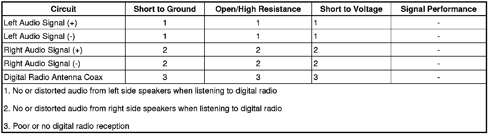

Digital Radio Malfunction
Digital Radio Malfunction
Diagnostic Instructions
* Perform the Diagnostic System Check - Vehicle (Initial Inspection and Diagnostic Overview) prior to using this diagnostic procedure.
* Review Strategy Based Diagnosis (Initial Inspection and Diagnostic Overview) for an overview of the diagnostic approach.
* Diagnostic Procedure Instructions (Initial Inspection and Diagnostic Overview) provides an overview of each diagnostic category.
Diagnostic Fault Information

Circuit/System Description
The digital radio receiver (DRR) receives an XM satellite radio signal via the cellular and digital radio antenna. This signal is passed to the DRR through the digital radio antenna coax. From the DRR, separate left and right audio signals (+ and -) are sent to the radio. The radio then processes these signals and passes the audio to the appropriate speakers or amplifier.
Reference Information
Schematic Reference
Radio/Navigation System Schematics (Radio/Navigation System Schematics)
Connector End View Reference
Component Connector End Views (Connector Views)
Description and Operation
Radio/Audio System Description and Operation (Radio/Audio System Description and Operation)
Electrical Information Reference
* Circuit Testing (Component Tests and General Diagnostics)
* Connector Repairs (Component Tests and General Diagnostics)
* Testing for Intermittent Conditions and Poor Connections (Component Tests and General Diagnostics)
* Wiring Repairs (Component Tests and General Diagnostics)
Scan Tool Reference
Control Module References (Programming and Relearning) for scan tool information
Special Tools
EL-48028 Digital Radio Test Antenna
Circuit/System Verification
1. Tune to a strong AM or FM station and verify each speaker is producing clear and even sound, with no distortion.
• If any speaker is not producing sound or the sound produced is distorted, refer to Speaker Malfunction (Speaker Malfunction) .
2. With the vehicle outside in an area with an unobstructed view of the southern sky, tune to XM. Verify XM reception is clear and the No XM Signal message is not displayed on the radio.
• If the No XM Signal message is displayed or XM reception is poor, refer to Digital Radio Antenna Circuit Malfunction.
3. Radio tuned to XM, use the radio balance function to transfer audio between the left and right side of the vehicle. Verify clear and even sound is heard from each side of the vehicle.
• If either side of the vehicle is not producing sound or the sound produced is distorted, refer to Digital Radio Signal Circuit Malfunction.
Circuit/System Testing
Digital Radio Antenna Circuit Malfunction
1. Ignition OFF, disconnect the digital radio antenna coax from the digital radio receiver (DRR). Connect the EL-48028 to the DRR.
2. Ignition ON, radio tuned to XM, verify XM reception is clear and uninterrupted.
• If reception is not clear, replace the DRR.
3. Ignition OFF, disconnect the digital radio antenna coax from the digital radio antenna.
4. Ignition ON, test for less than 1 volt between the antenna coax center terminal and ground.
• If greater than the specified range, replace the antenna coax.
5. Test for infinite resistance between the antenna coax center terminal and ground.
• If less than the specified value, replace the antenna coax.
6. Test for less than 5 ohms on the antenna coax center circuit from end to end.
• If greater than the specified range, replace the antenna coax.
7. Test for less than 5 ohms between the two ends of the coax cable outer shield.
• If greater than the specified range, replace the antenna coax able.
8. Test for infinite resistance between the coax center terminal and the outer shield.
• If less than the specified value, replace the antenna coax.
9. If all circuits test normal, replace the digital radio antenna.
Digital Radio Signal Circuit Malfunction
1. Ignition OFF, disconnect the X2 harness connector at the radio.
2. Radio ON, test for 5.0-7.5 volts between the signal circuit terminal 1 and ground.
• If greater than the specified range, test the signal circuit for a short to voltage. If the circuit tests normal, replace the DRR.
• If less than the specified range, test the signal circuit for a short to ground or an open/high resistance. If the circuit tests normal, replace the DRR.
3. Test for 5.0-7.5 volts between the signal circuit terminal 2 and ground.
• If greater than the specified range, test the signal circuit for a short to voltage. If the circuit tests normal, replace the DRR.
• If less than the specified range, test the signal circuit for a short to ground or an open/high resistance. If the circuit tests normal, replace the DRR.
4. Test for 5.0-7.5 volts between the signal circuit terminal 9 and ground.
• If greater than the specified range, test the signal circuit for a short to voltage. If the circuit tests normal, replace the DRR.
• If less than the specified range, test the signal circuit for a short to ground or an open/high resistance. If the circuit tests normal, replace the DRR.
5. Test for 5.0-7.5 volts between the signal circuit terminal 10 and ground.
• If greater than the specified range, test the signal circuit for a short to voltage. If the circuit tests normal, replace the DRR.
• If less than the specified range, test the signal circuit for a short to ground or an open/high resistance. If the circuit tests normal, replace the DRR.
6. If all circuits test normal, replace the radio.
Repair Instructions
Perform the Diagnostic Repair Verification (Verification Tests) after completing the diagnostic procedure.
* Cellular Communications/Digital Radio Antenna Replacement (Cellular Communications/Digital Radio Antenna Replacement)
* Control Module References (Programming and Relearning) for Radio and DRR replacement, setup, and programming